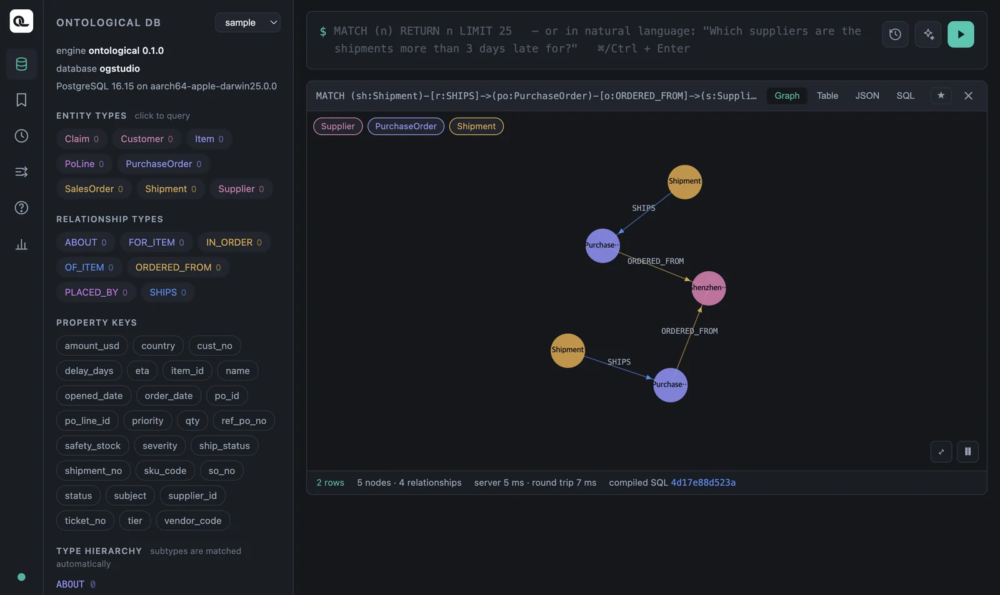

Find nodes by following relationship patterns, connect several databases in one query, and summarize with count, sum and collect. This is where Cypher starts to feel easier than SQL.
Relationship patterns#
MATCH (po:PurchaseOrder)-[:ORDERED_FROM]->(s:Supplier)
RETURN po.po_id, po.status, s.name
| po.po_id | po.status | s.name |
|---|---|---|
| PO-001 | OPEN | Shenzhen Goldline PCB |
| PO-002 | OPEN | Shenzhen Goldline PCB |
| PO-003 | CLOSED | Hanbit Precision |
| PO-004 | CLOSED | Daesung Cable |
| PO-005 | OPEN | Ningbo Magnetics |
| PO-006 | OPEN | Hanoi Assembly |
| PO-007 | OPEN | Ningbo Magnetics |
| PO-008 | OPEN | Hanbit Precision |
Purchase orders come from purchase_order in the ERP, and suppliers from supplier in the ERP. The relationship ORDERED_FROM replaces the join purchase_order.supplier_id = supplier.supplier_id.
Direction#
| Pattern | Meaning |
|---|---|
(a)-[:R]->(b) |
From a to b |
(a)<-[:R]-(b) |
From b to a — the same relationship, read from the other end |
(a)-[:R]-(b) |
Either direction |
Every relationship has a defined direction (PurchaseOrder → Supplier). To start from the supplier, reverse the arrow.
MATCH (s:Supplier)<-[:ORDERED_FROM]-(po:PurchaseOrder)
RETURN s.name, collect(po.po_id) AS orders
| s.name | orders |
|---|---|
| Daesung Cable | ["PO-004"] |
| Shenzhen Goldline PCB | ["PO-001", "PO-002"] |
| Hanbit Precision | ["PO-003", "PO-008"] |
| Ningbo Magnetics | ["PO-005", "PO-007"] |
| Hanoi Assembly | ["PO-006"] |
Put a label on every node
In Ontological DB, queries are faster and more accurate when you write a label on every node in the pattern. Write (po:PurchaseOrder) instead of (s:Supplier)<-[:ORDERED_FROM]-(po). In particular, if you look for a virtual relationship in the data fabric without labels, as -[r]-> (with no relationship name either), the result comes back empty. Make it a habit to write the relationship name and the labels on both ends.
Several hops — across databases#
This is the question you saw in Chapter 3: shipment (WMS) → purchase order (ERP) → supplier (ERP).
MATCH (sh:Shipment)-[:SHIPS]->(po:PurchaseOrder)-[:ORDERED_FROM]->(s:Supplier)
WHERE sh.delay_days > 0
RETURN sh.shipment_no, sh.ship_status, sh.delay_days, po.po_id, s.name
ORDER BY sh.delay_days DESC
| sh.shipment_no | sh.ship_status | sh.delay_days | po.po_id | s.name |
|---|---|---|---|---|
| SHP-03 | CUSTOMS_HOLD | 9 | PO-002 | Shenzhen Goldline PCB |
| SHP-02 | IN_TRANSIT | 7 | PO-001 | Shenzhen Goldline PCB |
| SHP-06 | IN_TRANSIT | 3 | PO-005 | Ningbo Magnetics |
| SHP-05 | DELIVERED | 1 | PO-004 | Daesung Cable |
If you return whole nodes, you can view the result as a graph. Give the relationships variables too (r, o) and return them as well.
MATCH (sh:Shipment)-[r:SHIPS]->(po:PurchaseOrder)-[o:ORDERED_FROM]->(s:Supplier)
WHERE sh.delay_days > 3
RETURN sh, r, po, o, s

You can see two shipments lead to the same supplier through different purchase orders. This was hard to spot in a table: the delayed shipments are concentrated on one supplier.
Toward the customer#
Inside the CRM, claim → sales order → customer:
MATCH (c:Claim)-[:ABOUT]->(so:SalesOrder)-[:PLACED_BY]->(cu:Customer)
RETURN c.ticket_no, c.severity, c.subject, so.so_no, cu.name
| c.ticket_no | c.severity | c.subject | so.so_no | cu.name |
|---|---|---|---|---|
| T-1 | HIGH | Controller power failure | SO-01 | Seoul Electronics |
| T-2 | LOW | Damaged cable packaging | SO-04 | Berlin Motion |
| T-3 | HIGH | PCB soldering defect | SO-05 | Tokyo Devices |
Patterns with two branches#
You can connect patterns by writing several of them separated by commas and using the same variable. To answer “Which suppliers supplied the item in the soldering defect claim?”, you find the item from the claim in the CRM, then connect that item to purchase order lines and suppliers in the ERP. (You need the PoLine you made in Chapter 6.)
MATCH (i:Item)<-[:FOR_ITEM]-(so:SalesOrder)<-[:ABOUT]-(c:Claim),
(i:Item)<-[:OF_ITEM]-(l:PoLine)-[:IN_ORDER]->(po:PurchaseOrder)-[:ORDERED_FROM]->(s:Supplier)
WHERE c.subject CONTAINS 'soldering'
RETURN DISTINCT i.name, s.name
| i.name | s.name |
|---|---|
| PCB board | Hanoi Assembly |
| PCB board | Shenzhen Goldline PCB |
One query read five kinds of nodes across two databases (CRM and ERP).
Keep rows without a match — OPTIONAL MATCH#
This is the Cypher version of SQL's LEFT JOIN. The row stays even when there is no connected data, and the missing side becomes null.
MATCH (sh:Shipment)
OPTIONAL MATCH (sh:Shipment)-[:SHIPS]->(po:PurchaseOrder)
RETURN sh.shipment_no, po.po_id
ORDER BY sh.shipment_no
Of the 8 rows, only SHP-08 has null for po.po_id. This shipment points to purchase order PO-999, which does not exist in the ERP — a data quality problem we put there on purpose. To pick only the rows with no connected data:
MATCH (sh:Shipment)
OPTIONAL MATCH (sh:Shipment)-[:SHIPS]->(po:PurchaseOrder)
WITH sh, po WHERE po IS NULL
RETURN sh.shipment_no, sh.ref_po_no
The result is SHP-08, PO-999.
Instead of NOT EXISTS
Neo4j's WHERE NOT EXISTS { MATCH … } subquery is not supported yet. Use OPTIONAL MATCH + IS NULL as shown above.
Grouping and counting — aggregation#
When RETURN has both aggregate functions and plain values, rows with the same values in the plain columns form one group (you don't write a separate GROUP BY as in SQL).
MATCH (po:PurchaseOrder)
RETURN po.status, count(*) AS n, sum(po.amount_usd) AS total,
avg(po.amount_usd) AS average, max(po.amount_usd) AS biggest
| po.status | n | total | average | biggest |
|---|---|---|---|---|
| CLOSED | 2 | 24000 | 12000 | 15000 |
| OPEN | 6 | 255000 | 42500 | 82000 |
Open purchase order amount by supplier:
MATCH (po:PurchaseOrder)-[:ORDERED_FROM]->(s:Supplier)
WHERE po.status = 'OPEN'
RETURN s.name AS supplier, count(po) AS open_orders, sum(po.amount_usd) AS open_amount
ORDER BY open_amount DESC
| supplier | open_orders | open_amount |
|---|---|---|
| Shenzhen Goldline PCB | 2 | 123000 |
| Ningbo Magnetics | 2 | 72000 |
| Hanoi Assembly | 1 | 33000 |
| Hanbit Precision | 1 | 27000 |
Longest delay by supplier:
MATCH (s:Supplier)<-[:ORDERED_FROM]-(po:PurchaseOrder)<-[:SHIPS]-(sh:Shipment)
RETURN s.name, max(sh.delay_days) AS worst
ORDER BY worst DESC
Shenzhen Goldline PCB 9 days, Ningbo Magnetics 3 days, Daesung Cable 1 day, the rest 0 days.
Splitting into stages — WITH#
WITH splits a query into two stages. The next stage takes over the result of the previous one. Use it when you filter again on an aggregated value (like SQL's HAVING).
MATCH (po:PurchaseOrder)-[:ORDERED_FROM]->(s:Supplier)
WITH s, count(po) AS n
WHERE n >= 2
RETURN s.name, n
Suppliers with two or more purchase orders — Ningbo Magnetics, Shenzhen Goldline PCB and Hanbit Precision (2 each).
Use size() to get the length of a list built with collect().
MATCH (po:PurchaseOrder)-[:ORDERED_FROM]->(s:Supplier)
WITH s, collect(po.po_id) AS pos
RETURN s.name, size(pos) AS n, pos
ORDER BY n DESC
Known limitation — filtering on an amount total
If you filter again on the sum of a decimal column, as in WITH s, sum(po.amount_usd) AS total WHERE total > 50000, the current version fails with invalid input syntax for type bigint. Convert to a floating-point number before adding: sum(toFloat(po.amount_usd)).
cypher
MATCH (po:PurchaseOrder)-[:ORDERED_FROM]->(s:Supplier)
WITH s, sum(toFloat(po.amount_usd)) AS total
WHERE total > 50000
RETURN s.name, total ORDER BY total DESC
Starting from a list — UNWIND#
UNWIND turns a list into rows. It is handy when you look up several keys at once.
UNWIND ['SHP-02', 'SHP-03'] AS no
MATCH (sh:Shipment {shipment_no: no})
RETURN sh.shipment_no, sh.eta
Check yourself
- Group open (
OPEN) sales orders by customer, and show each customer's name with a list of order numbers. - Which purchase orders have two or more shipments?
- Find the customers who filed
HIGHseverity claims, and their sales orders. - (Challenge) Show how many open purchase orders each supplier has, including suppliers with no open purchase orders, shown as 0.
Show answers
MATCH (cu:Customer)<-[:PLACED_BY]-(so:SalesOrder)
WHERE so.status = 'OPEN'
RETURN cu.name, collect(so.so_no) AS open_orders
Tokyo Devices ["SO-03", "SO-05"], Seoul Electronics ["SO-02"].
MATCH (po:PurchaseOrder)<-[:SHIPS]-(sh:Shipment)
WITH po, count(sh) AS shipments WHERE shipments >= 2
RETURN po.po_id, shipments
PO-001 (SHP-01, SHP-02).
MATCH (cu:Customer)<-[:PLACED_BY]-(so:SalesOrder)<-[:ABOUT]-(c:Claim)
WHERE c.severity = 'HIGH'
RETURN cu.name, so.so_no, c.subject
Seoul Electronics SO-01 “Controller power failure”, Tokyo Devices SO-05 “PCB soldering defect”.
MATCH (s:Supplier)
OPTIONAL MATCH (s:Supplier)<-[:ORDERED_FROM]-(po:PurchaseOrder)
WHERE po.status = 'OPEN'
RETURN s.name, count(po) AS open_n ORDER BY open_n DESC
Daesung Cable shows 0, because count(po) does not count null (with count(*) it would be 1).